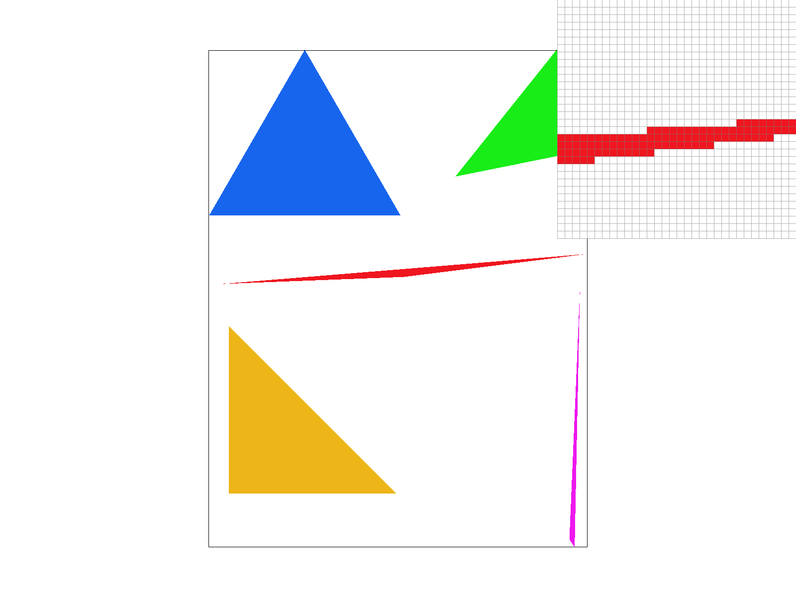
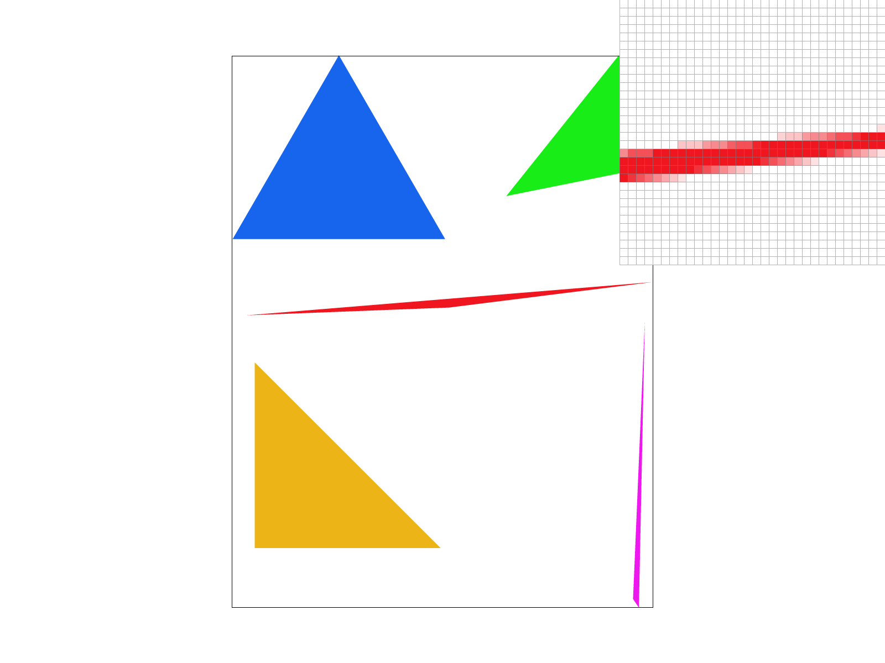
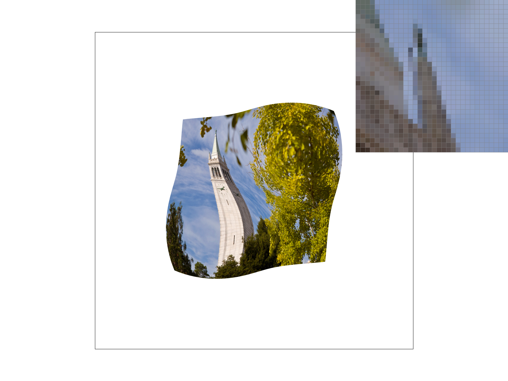

Overview
In this project, we implemented a portion of the rasterization pipeline. We implemented the rasterization of triangles, with both colors and textures, as well as different ways of antialiasing both the triangle edges and the textures themselves. We learned about how the rasterization pipeline works as well as how to both optimize and improve the quality of the rasterization. We were surprised by how simple some of the anti-aliasing methods were, we were especially impressed with the simplicity of supersampling, and how it has a very tangible effect on the quality of the image. We thought it was interesting how simple transforms were in implemenation for how powerful they could be in a wide variety of applications.
Section I: Rasterization
Part 1: Rasterizing single-color triangles
We are rasterizing triangles by scanning every pixel in the bounding box and checking whether
it is in the triangle or not using the line check.
For every row of the triangle, if we have entered the
triangle and we exit it again,
we stop scanning the row since we know that any more points in this row will not be within the triangle. This
means
that at most, we are checking every pixel in the bounding box of the triangle, so our implementation cannot be
worse
than any implementation that checks every bounding box in the triangle.
Instead of scanning the entire bounding box of the triangle, for every row we check to see if we are exiting the triangle, and if so, we stop scanning this row since we know we will not enter the triangle again. We also pulled the subtractions between different points of the triangle out of the loops to avoid repeated computation. This lead to a 20.1% speedup on average over a naive solution.
| Image | Before Optimization | After Optimization |
|---|---|---|
| basic/test3 | 11601 | 8941 |
| basic/test4 | 844 | 755 |
| basic/test5 | 2335 | 1774 |
| basic/test6 | 1417 | 1088 |
Part 2: Antialiasing triangles
First, we increased the size of the samplebuffer by multiplying it by the sample_rate. We then modified the triangle rasterization algorithm to sample the triangle more frequently, as if the screen size was multiplied by sqrt(sample_rate) on each side. This new data was stored linearly as before, just as if sample_buffer was made for a larger screen size.When resolving the sample buffer to the frame buffer, we took every sqrt(sample_rate) x sqrt(sample_rate) grid of pixels and average the colors to return one pixel in the framebuffer. This downsamples the samplebuffer back to the size of the framebuffer.
We also modified the fill_pixel function to take in an optional parameter averagePixel, which is used by the rasterize point and line functions. This parameter rasterizes points and lines by filling in sqrt(sample_rate) x sqrt(sample_rate) pixels for every normally filled in pixel, so that the lines and points will be rasterized back to fully colored in pixels that are 1 pixel wide as with no supersampling.
1x
4x

16x
Part 3: Transforms
We tried to make cubeman look like he was walking as on the crosswalk sign.Section II: Sampling
Part 4: Barycentric coordinates

Part 5: "Pixel sampling" for texture mapping
Pixel sampling is the process of acquiring color from texture maps to properly color textured objects in our frame buffer. In pixel sampling, we use barycentric coordinates to find the corresponding texel coordinate (u, v) for every point (x, y) in a triangle. Then, in nearest neighbor sampling, we sample the texel that is closest to our point (u, v) and use it as the color for our screen pixel. In bilinear sampling, we interpolate the color between the four closest texels to our texel coordinate and return that as the color for our screen pixel.We implemented triangle texture rasterization by interpolating between the texel coordinates of each triangle corner using barycentric coordinates to find the (u, v) coordinate for any point within the triangle. We then multiplied these coordinates by the height and width of the mipmap we were sampling from so that we would have the correct coordinates in texel space. To implement nearest neighbor sampling, we realized that each coordinate we sampled would already be inside its nearest pixel, so we used floor() on the coordinates to get the coordinate of the pixel.
To implement bilinear sampling, we found the center of the nearest group of four pixels using round() on our coordinate, then sampled those pixels and linearly interpolated between the colors.
Comparison of Nearest pixel sampling vs. Bilinear Pixel Sampling
Nearest, 1x Sampling
Bilinear, 1x Sampling
Nearest, 16x Sampling
Bilinear, 16x Sampling
From this, we see that bilinear pixel sampling has a substantial edge over nearest sampling in the case of 1x sampling. This is evident from the reduction of aliasing at the edges of color boundaries. In the case of 16x sampling, however, the methods of nearest vs bilinear pixel sampling do not make much of a difference. Since supersampling naturally increases the density of samples when rendering the image, these samples have less variance in color. Therefore, bilinear pixel sampling has less of an effect, as the interpolated samples are closer together in color, as compared to the non-supersampled case.
Part 6: "Level sampling" with mipmaps for texture mapping
|
|

|
|
|
|
Level sampling is determining which mipmap to sample from, depending on how each change in pixel space maps to a change in the texture; the bigger the change in texture space, the smaller the mipmap we can use. Methods for determining which level of mipmap to use that we implemented are nearest and linear. To select a level, we calculated the vectors for the changes in texture space, per change in x and y coordinates in pixel space. Then, we found which of these vectors were larger in terms of their norm and took the log of their norm to determine the mipmap level. In nearest, we round this value and select that as the mipmap level, taking the color from this level. In linear level sampling, we take the two closest integers to this value, and take the weighted average of the texel colors at those two levels.